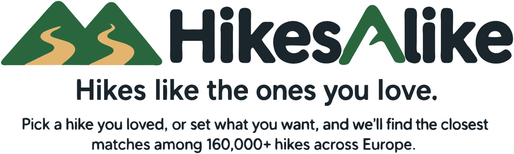

About
HikesAlike is free and non-commercial. Pick a hike you liked, and it finds the ones most like it; or describe the hike you want. There are no ads, no accounts and nothing to pay for.
It is built on the Hike catalog: OpenStreetMap hiking routes of at least 1 km one way, with no upper limit, plus day stages of long tours and hikes joined from signpost networks, compared on 27 measures (with Return to start, a hike that does not end at its start is measured with its way back). Each measure is calibrated against random pairs of hikes, so weights mean the same on every measure.
Why use it
- Start from a hike you liked, and it finds the ones most like it. No hike in mind? Describe the one you want.
- Day hikes and multi-day tours: routes of any length, long tours also cut into day stages of 8–25 km, and hikes joined from signpost networks. Over about 25 km is usually more than a day.
- It weighs the weather too: the typical temperature in the month you pick, and under Advanced search rain and sunshine, alongside length, climbing and landscape.
- A few plain measures to start with, and more, grouped by topic, under Advanced search. You choose how much each one matters.
- Free, with no ads, no account and no cookies. The code is open source (MIT), and the open data it uses is credited on Data and credits.
- It covers Europe where OpenStreetMap maps hiking routes: dense in the Alps and central Europe, thin in much of the east and south-east.
Who runs it
Run by the maintainer of this open-source project. For questions or problems, open an issue on the GitHub repository.
The code
The code is open source on GitHub under the MIT licence, which covers the code only. The data has its own licences: see Data and credits.